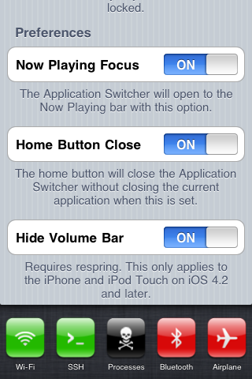
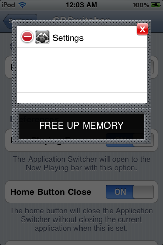
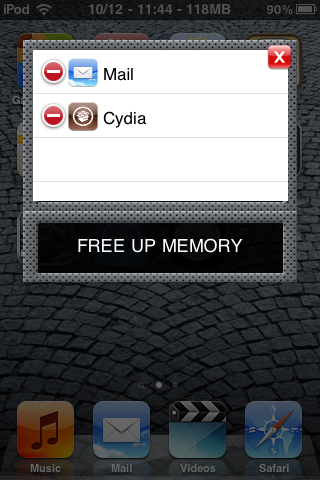
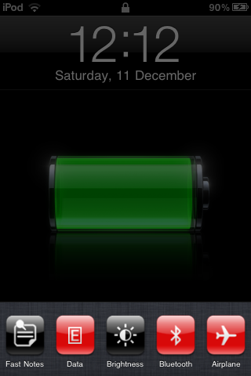

SBSwitcher brings the power of SBSettings to the simplicity of the app switcher bar - just scroll left! With SBSwitcher, you can also access the switcher bar and all of your SBSettings toggles from the convenience of the lock screen.
You can buy SBSwitcher directly from the Cydia Store on your iDevice. SBSwitcher is hosted by the BigBoss repository.
Using SBSwitcher is easy. Bring up the App Switcher by double-tapping on your Home button, and then swipe scroll to the left to see your SBSettings toggles.
Tip: Use the Settings app to make your App Switcher bar focus on the Now Playing controls when it starts up for easier access! There are a bunch of other useful settings to check out too, like disabling the Volume bar on iOS 4.2.
  Notice that SBSwitcher is also available from the lock screen!

You may contact us with questions, comments, suggestions, and bugs by email.
Also check out WebLeaps, an app that allows you to search the web with keywords from Spotlight and Safari.